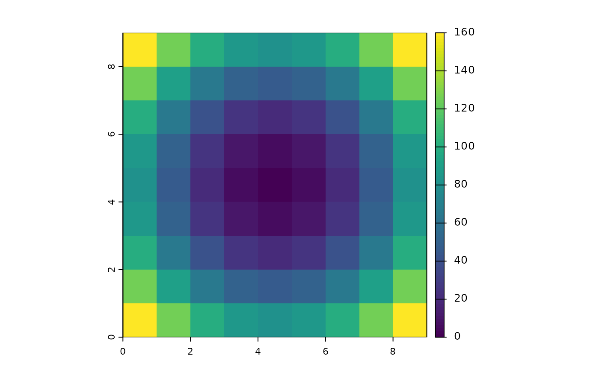
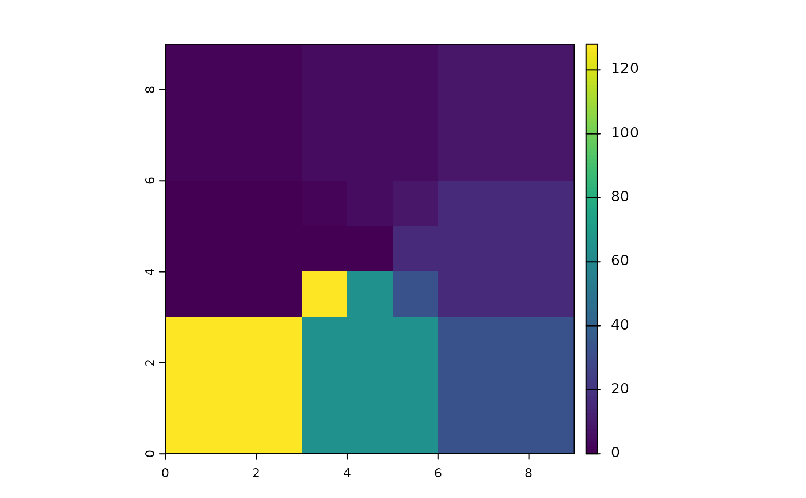
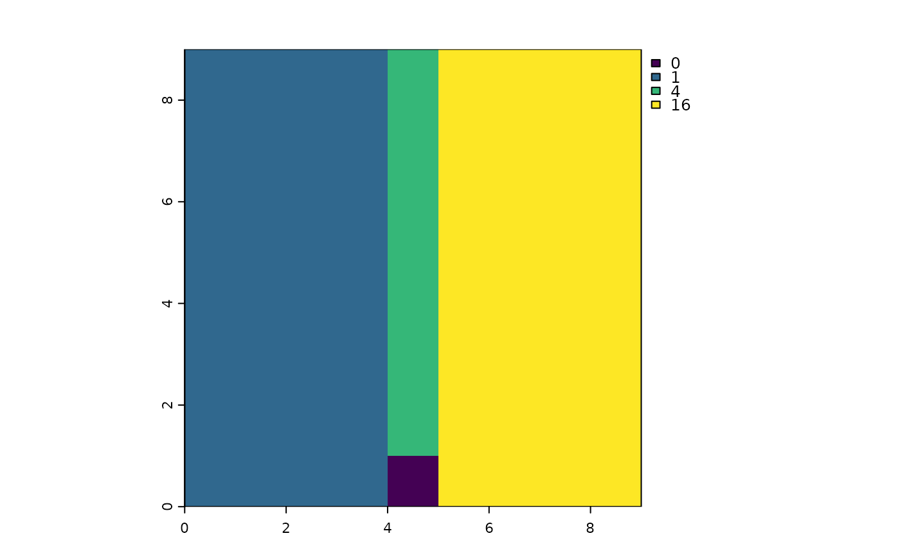
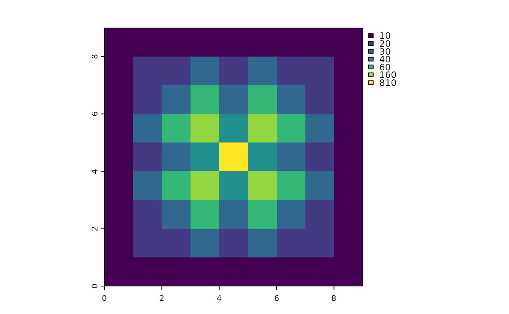
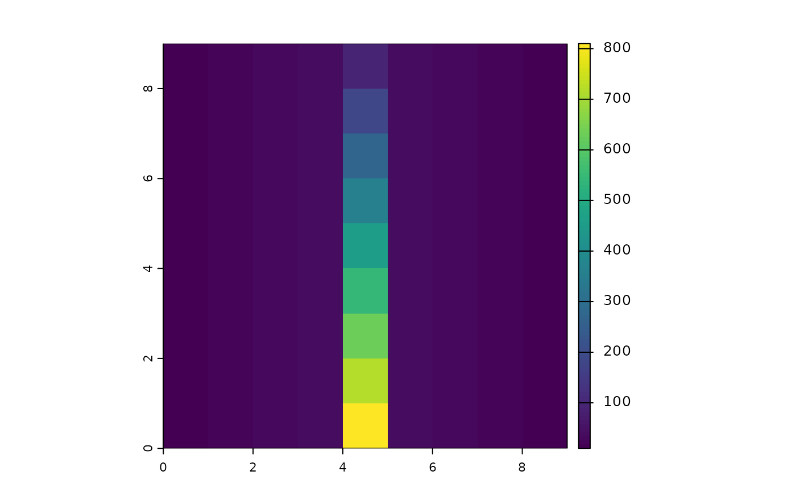
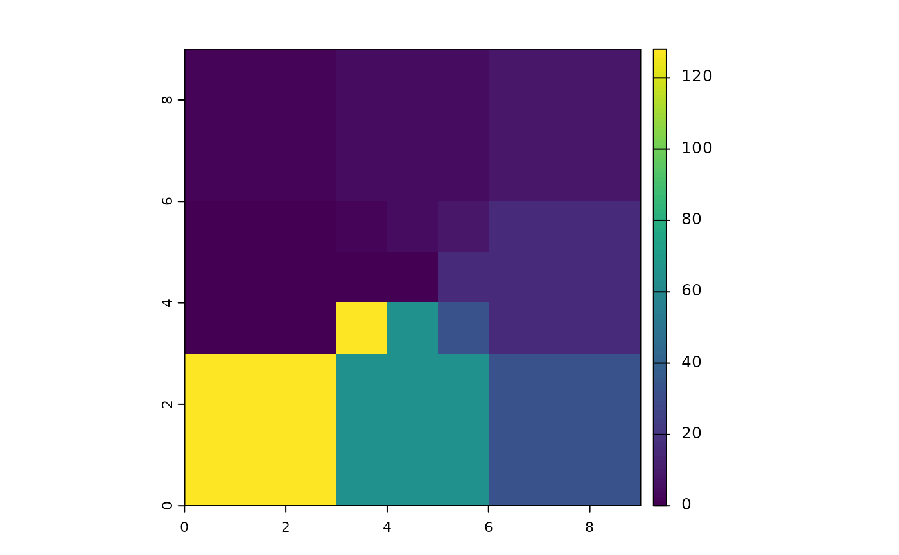
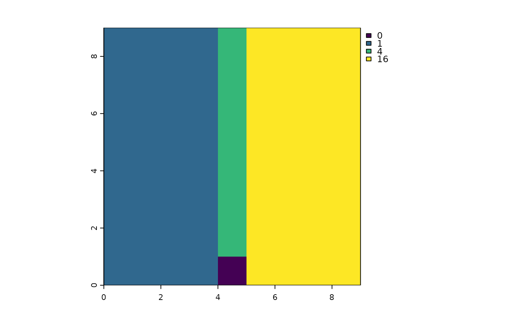
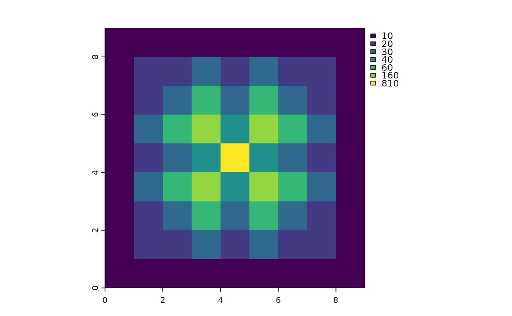
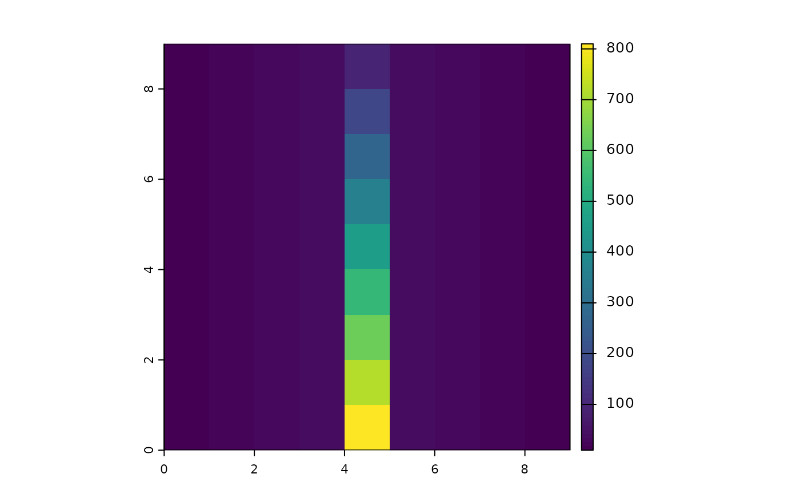

Flow accumulation
flowAccumulation.RdComputes flow accumulation or the total contributing area in terms of numbers of cells upstream of each cell.
Arguments
- x
SpatRaster with flow direction, see
terrain.- weight
SpatRaster with weight/score daa. For example, cell area or precipitation
- filename
character. Output filename
- ...
additional arguments for writing files as in
writeRaster
References
Zhou, G., Wei, H. & Fu, S. A fast and simple algorithm for calculating flow accumulation matrices from raster digital elevation. Front. Earth Sci. 13, 317–326 (2019). doi:10.1007/s11707-018-0725-9. Also see: https://ica-abs.copernicus.org/articles/1/434/2019/
Examples
elev1 <- array(NA,c(9,9))
elev2 <- elev1
dx <- 1
dy <- 1
for (r in 1:nrow(elev1)) {
y <- (r-5)*dx
for (c in 1:ncol(elev1)) {
x <- (c-5)*dy
elev1[r,c] <- 5*(x^2+y^2)
elev2[r,c] <- 10+5*(abs(x))-0.001*y
}
}
## Elevation raster
elev1 <- rast(elev1)
elev2 <- rast(elev2)
t(array(elev1[],rev(dim(elev1)[1:2])))
#> [,1] [,2] [,3] [,4] [,5] [,6] [,7] [,8] [,9]
#> [1,] 160 125 100 85 80 85 100 125 160
#> [2,] 125 90 65 50 45 50 65 90 125
#> [3,] 100 65 40 25 20 25 40 65 100
#> [4,] 85 50 25 10 5 10 25 50 85
#> [5,] 80 45 20 5 0 5 20 45 80
#> [6,] 85 50 25 10 5 10 25 50 85
#> [7,] 100 65 40 25 20 25 40 65 100
#> [8,] 125 90 65 50 45 50 65 90 125
#> [9,] 160 125 100 85 80 85 100 125 160
t(array(elev2[],rev(dim(elev2)[1:2])))
#> [,1] [,2] [,3] [,4] [,5] [,6] [,7] [,8] [,9]
#> [1,] 30.004 25.004 20.004 15.004 10.004 15.004 20.004 25.004 30.004
#> [2,] 30.003 25.003 20.003 15.003 10.003 15.003 20.003 25.003 30.003
#> [3,] 30.002 25.002 20.002 15.002 10.002 15.002 20.002 25.002 30.002
#> [4,] 30.001 25.001 20.001 15.001 10.001 15.001 20.001 25.001 30.001
#> [5,] 30.000 25.000 20.000 15.000 10.000 15.000 20.000 25.000 30.000
#> [6,] 29.999 24.999 19.999 14.999 9.999 14.999 19.999 24.999 29.999
#> [7,] 29.998 24.998 19.998 14.998 9.998 14.998 19.998 24.998 29.998
#> [8,] 29.997 24.997 19.997 14.997 9.997 14.997 19.997 24.997 29.997
#> [9,] 29.996 24.996 19.996 14.996 9.996 14.996 19.996 24.996 29.996
plot(elev1)

plot(elev2)
 ## Flow direction raster
flowdir1<- terrain(elev1,v="flowdir")
flowdir2<- terrain(elev2,v="flowdir")
t(array(flowdir1[],rev(dim(flowdir1)[1:2])))
#> [,1] [,2] [,3] [,4] [,5] [,6] [,7] [,8] [,9]
#> [1,] 2 2 2 4 4 4 8 8 8
#> [2,] 2 2 2 4 4 4 8 8 8
#> [3,] 2 2 2 4 4 4 8 8 8
#> [4,] 1 1 1 2 4 8 16 16 16
#> [5,] 1 1 1 1 0 16 16 16 16
#> [6,] 1 1 1 128 64 32 16 16 16
#> [7,] 128 128 128 64 64 64 32 32 32
#> [8,] 128 128 128 64 64 64 32 32 32
#> [9,] 128 128 128 64 64 64 32 32 32
t(array(flowdir2[],rev(dim(flowdir2)[1:2])))
#> [,1] [,2] [,3] [,4] [,5] [,6] [,7] [,8] [,9]
#> [1,] 1 1 1 1 4 16 16 16 16
#> [2,] 1 1 1 1 4 16 16 16 16
#> [3,] 1 1 1 1 4 16 16 16 16
#> [4,] 1 1 1 1 4 16 16 16 16
#> [5,] 1 1 1 1 4 16 16 16 16
#> [6,] 1 1 1 1 4 16 16 16 16
#> [7,] 1 1 1 1 4 16 16 16 16
#> [8,] 1 1 1 1 4 16 16 16 16
#> [9,] 1 1 1 1 0 16 16 16 16
plot(flowdir1)

plot(flowdir2)

##
flow_acc1 <- flowAccumulation((flowdir1))
flow_acc2 <- flowAccumulation((flowdir2))
weight <- elev1*0+10
flow_acc1w <- flowAccumulation(flowdir1,weight)
flow_acc2w <- flowAccumulation(flowdir2,weight)
t(array(flow_acc1w[],rev(dim(flow_acc1w)[1:2])))
#> [,1] [,2] [,3] [,4] [,5] [,6] [,7] [,8] [,9]
#> [1,] 10 10 10 10 10 10 10 10 10
#> [2,] 10 20 20 30 20 30 20 20 10
#> [3,] 10 20 30 60 30 60 30 20 10
#> [4,] 10 30 60 160 40 160 60 30 10
#> [5,] 10 20 30 40 810 40 30 20 10
#> [6,] 10 30 60 160 40 160 60 30 10
#> [7,] 10 20 30 60 30 60 30 20 10
#> [8,] 10 20 20 30 20 30 20 20 10
#> [9,] 10 10 10 10 10 10 10 10 10
t(array(flow_acc2w[],rev(dim(flow_acc2w)[1:2])))
#> [,1] [,2] [,3] [,4] [,5] [,6] [,7] [,8] [,9]
#> [1,] 10 20 30 40 90 40 30 20 10
#> [2,] 10 20 30 40 180 40 30 20 10
#> [3,] 10 20 30 40 270 40 30 20 10
#> [4,] 10 20 30 40 360 40 30 20 10
#> [5,] 10 20 30 40 450 40 30 20 10
#> [6,] 10 20 30 40 540 40 30 20 10
#> [7,] 10 20 30 40 630 40 30 20 10
#> [8,] 10 20 30 40 720 40 30 20 10
#> [9,] 10 20 30 40 810 40 30 20 10
plot(flow_acc1w)

plot(flow_acc2w)

## Application wth example elevation data
elev <- rast(system.file('ex/elev.tif',package="terra"))
flowdir <- terrain(elev,"flowdir")
weight <- cellSize(elev,unit="km")
flowacc_weight <- flowAccumulation(flowdir,weight)
flowacc <- flowAccumulation(flowdir)
## Flow direction raster
flowdir1<- terrain(elev1,v="flowdir")
flowdir2<- terrain(elev2,v="flowdir")
t(array(flowdir1[],rev(dim(flowdir1)[1:2])))
#> [,1] [,2] [,3] [,4] [,5] [,6] [,7] [,8] [,9]
#> [1,] 2 2 2 4 4 4 8 8 8
#> [2,] 2 2 2 4 4 4 8 8 8
#> [3,] 2 2 2 4 4 4 8 8 8
#> [4,] 1 1 1 2 4 8 16 16 16
#> [5,] 1 1 1 1 0 16 16 16 16
#> [6,] 1 1 1 128 64 32 16 16 16
#> [7,] 128 128 128 64 64 64 32 32 32
#> [8,] 128 128 128 64 64 64 32 32 32
#> [9,] 128 128 128 64 64 64 32 32 32
t(array(flowdir2[],rev(dim(flowdir2)[1:2])))
#> [,1] [,2] [,3] [,4] [,5] [,6] [,7] [,8] [,9]
#> [1,] 1 1 1 1 4 16 16 16 16
#> [2,] 1 1 1 1 4 16 16 16 16
#> [3,] 1 1 1 1 4 16 16 16 16
#> [4,] 1 1 1 1 4 16 16 16 16
#> [5,] 1 1 1 1 4 16 16 16 16
#> [6,] 1 1 1 1 4 16 16 16 16
#> [7,] 1 1 1 1 4 16 16 16 16
#> [8,] 1 1 1 1 4 16 16 16 16
#> [9,] 1 1 1 1 0 16 16 16 16
plot(flowdir1)

plot(flowdir2)

##
flow_acc1 <- flowAccumulation((flowdir1))
flow_acc2 <- flowAccumulation((flowdir2))
weight <- elev1*0+10
flow_acc1w <- flowAccumulation(flowdir1,weight)
flow_acc2w <- flowAccumulation(flowdir2,weight)
t(array(flow_acc1w[],rev(dim(flow_acc1w)[1:2])))
#> [,1] [,2] [,3] [,4] [,5] [,6] [,7] [,8] [,9]
#> [1,] 10 10 10 10 10 10 10 10 10
#> [2,] 10 20 20 30 20 30 20 20 10
#> [3,] 10 20 30 60 30 60 30 20 10
#> [4,] 10 30 60 160 40 160 60 30 10
#> [5,] 10 20 30 40 810 40 30 20 10
#> [6,] 10 30 60 160 40 160 60 30 10
#> [7,] 10 20 30 60 30 60 30 20 10
#> [8,] 10 20 20 30 20 30 20 20 10
#> [9,] 10 10 10 10 10 10 10 10 10
t(array(flow_acc2w[],rev(dim(flow_acc2w)[1:2])))
#> [,1] [,2] [,3] [,4] [,5] [,6] [,7] [,8] [,9]
#> [1,] 10 20 30 40 90 40 30 20 10
#> [2,] 10 20 30 40 180 40 30 20 10
#> [3,] 10 20 30 40 270 40 30 20 10
#> [4,] 10 20 30 40 360 40 30 20 10
#> [5,] 10 20 30 40 450 40 30 20 10
#> [6,] 10 20 30 40 540 40 30 20 10
#> [7,] 10 20 30 40 630 40 30 20 10
#> [8,] 10 20 30 40 720 40 30 20 10
#> [9,] 10 20 30 40 810 40 30 20 10
plot(flow_acc1w)

plot(flow_acc2w)

## Application wth example elevation data
elev <- rast(system.file('ex/elev.tif',package="terra"))
flowdir <- terrain(elev,"flowdir")
weight <- cellSize(elev,unit="km")
flowacc_weight <- flowAccumulation(flowdir,weight)
flowacc <- flowAccumulation(flowdir)